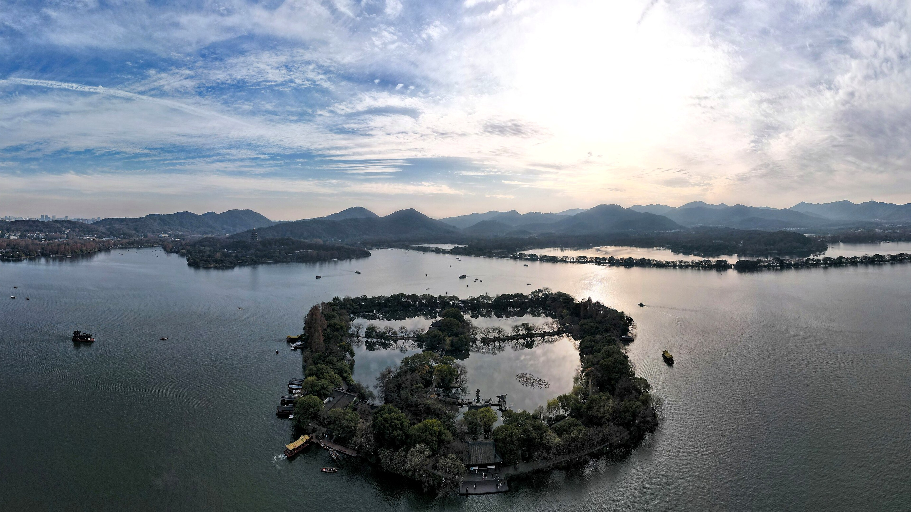

湖山慢游 杭州 西湖、灵隐寺、龙井村，把江南的松弛感串成一条轻路线。古城文化
按旅行方向推荐相关景点
从历史古都、城墙街巷和文化遗产中，挑选适合深度漫游的城市。
精选目的地
按旅行方式选择下一站
不再使用整齐复制的照片卡片，改为更有层次的目的地版面，每个城市都可以点击查看景点介绍。

AI 旅游助手
像正常旅行顾问一样对话
右下角入口可以打开对话窗口，助手会结合知识库、上下文和用户偏好，流式输出更完整的路线建议。
RAG 知识库
覆盖页面城市和全国省份景区资料，减少答非所问。
Agent 规划
根据天数、同行人和偏好，自动拆分景点、美食、交通和住宿建议。
流式回答
先思考再输出，回答节奏更接近真实 AI 助手。
实时 API
可查询天气、当前位置、当地时间和旅行常用汇率。